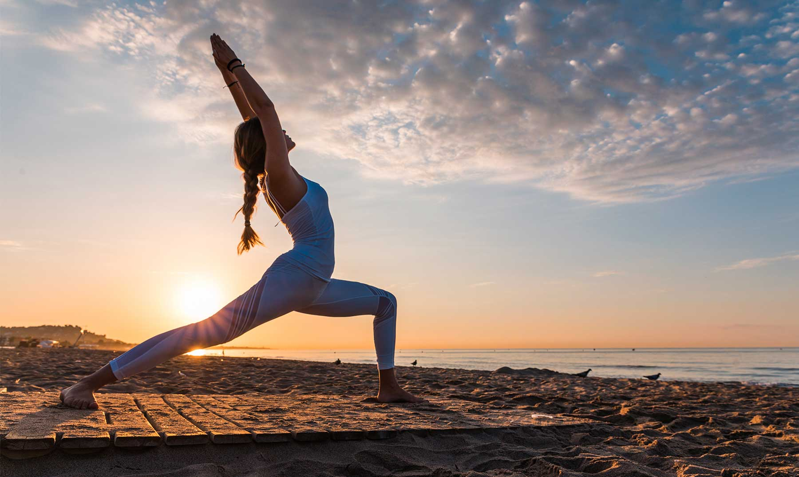
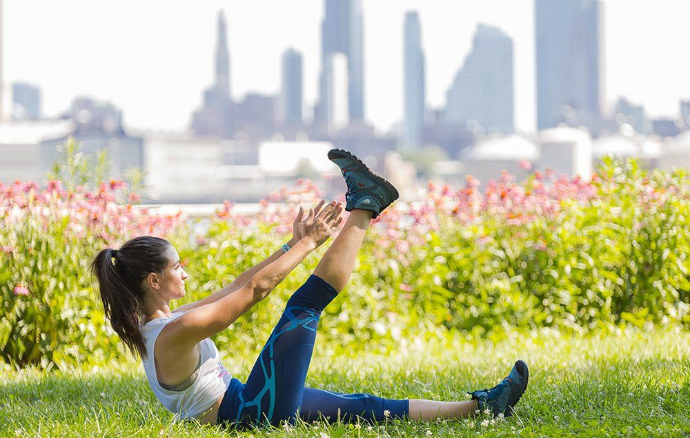

We all know how important exercise is for keeping us physically healthy. But did you know that exercise can also help keep you mentally healthy?
Research shows that people who exercise regularly have better mental health and emotional wellbeing, and lower rates of mental illness.
Taking up exercise seems to reduce the risk of developing mental illness. It also seems to help in treating some mental health conditions, like depression and anxiety. For example, for mild-moderate depression, research suggests physical activity can be as effective as antidepressants or psychological treatments like cognitive behavioural therapy. Exercise can also a valuable addition to other treatment options.

Why does exercise make us feel better, mentally?
Often, people who exercise regularly do it simply because it makes them feel good. Exercise can boost your mood, concentration and alertness. It can even help give you a positive outlook on life.
The link between exercise and mental health is complicated. Inactivity can be both a cause and a consequence of mental illness, for example. But there are lots of ways that exercise can benefit your mental health, such as:
The levels of chemicals in the brain, such as serotonin, stress hormones and endorphins, change when you exercise.
Regular exercise can help you sleep better. And good sleep helps you manage your mood.
Exercise can improve your sense of control, coping ability and self-esteem. People who exercise regularly often report how good achieving a goal makes them feel.
Exercise can distract you from negative thoughts and provide opportunities to try new experiences.
It offers an opportunity to socialise and get social support if you exercise with others.
Exercise increases your energy levels.
Physical activity can be an outlet for your frustrations.
Exercise can reduce skeletal muscle tension, which helps you feel more relaxed.
The physical benefits of exercise are also important for people with mental illness. It improves your cardiovascular health and overall physical health. This is important because people with mental health issues are at a higher risk of suffering from chronic physical conditions such as heart disease, diabetes, arthritis and asthma.
Exercising for your mental health
If regular exercise is not already a part of your routine, you might be wondering how much you need to do to give your mental health a boost.
The really good news is exercise doesn’t have to be strenuous or take a long time. Studies show low or moderate intensity exercise is enough to make a difference in terms of your mood and thinking patterns.
Australia’s physical activity and sedentary guidelines recommend adults should be active most days, aiming for a total of 2.5-5 hours of moderate physical activity per week, such as a brisk walk or swimming. Alternatively, they recommend getting 1.25-2.5 hours of vigorous physical activity per week - such as jogging, fast cycling, or a team sport. Or, you can combine both moderate and vigorous activities.
However, any exercise is better than none. Going for a leisurely walk, or activities like stretching and yoga, can also have huge benefits on your mind and body. Even doing housework like sweeping, mopping, or vacuuming can give you a mild work out.

How to get started with exercise
It can be intimidating to start exercising if you haven’t done it in a while, but a plan can help you start and stick with it.
Your new exercise plan has a better chance of success if you:
see your GP or an accredited exercise physiologist before you start, and regularly as you continue your exercise plan
choose an activity you like, or have enjoyed in the past, that suits your fitness levels and abilities
start small – build up your activity gradually. Ideally, vary your activities so you don’t get bored
write your plan in your diary or on your calendar, so it’s part of your schedule
regularly revisit your exercise plans, and try something different if it’s not working out for you.

Exercise outdoors
For even greater benefits, try exercising outdoors.
Some recent studies have found people report a higher level of vitality, enthusiasm, pleasure and self-esteem, and a lower level of tension, depression and fatigue, after they have walked outside. People who exercise outside also say they are more likely to exercise again than those who stay indoors.
And, people who exercise outside do it more often, and for longer, than those who work out indoors.
How to be more active every day
Make exercise part of your everyday activity. Try walking or cycling instead of using the car. Get off a tram, train or bus a stop earlier and walk the rest of the way. Or spend some time walking your kids to school. Get active around the house by doing some gardening, washing the car or cleaning the windows.
Australia’s physical activity and sedentary guidelines can give you more information. The important thing to remember is to try to move more and sit less every day.
Source: https://www.betterhealth.vic.gov.au/health/healthyliving/exercise-and-mental-health